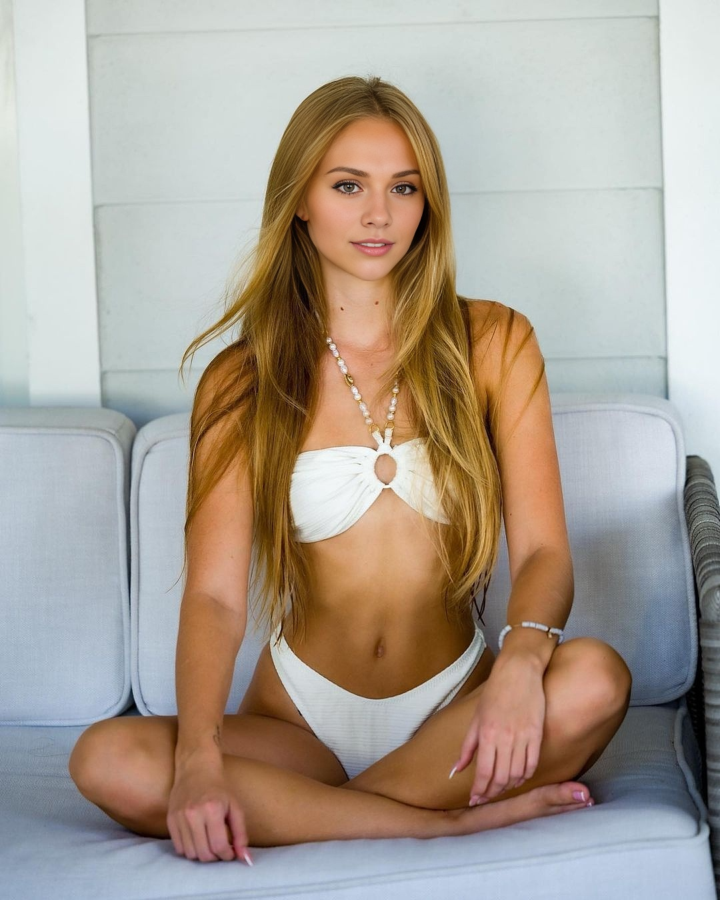
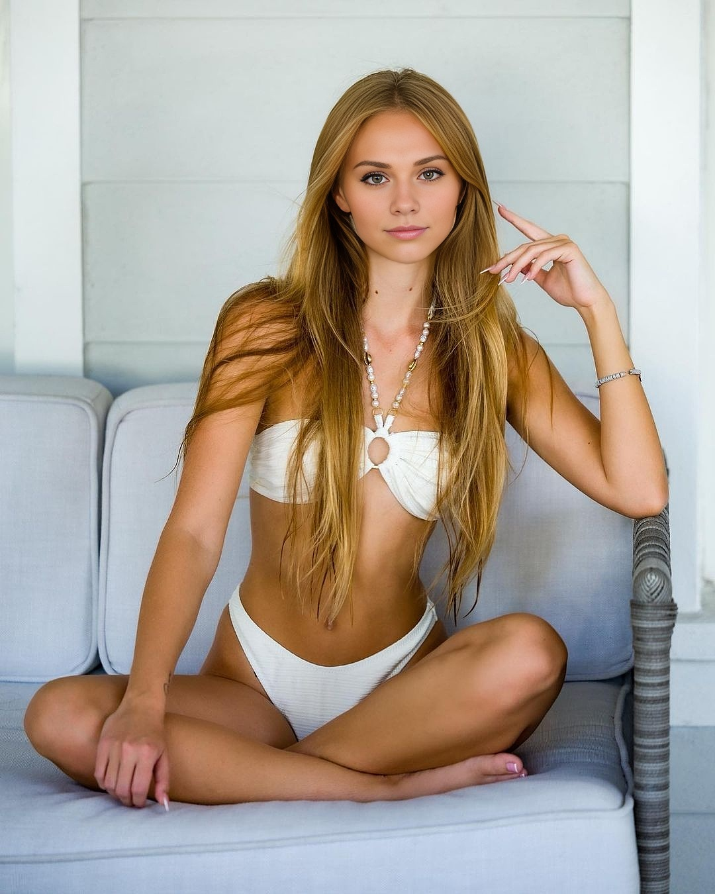
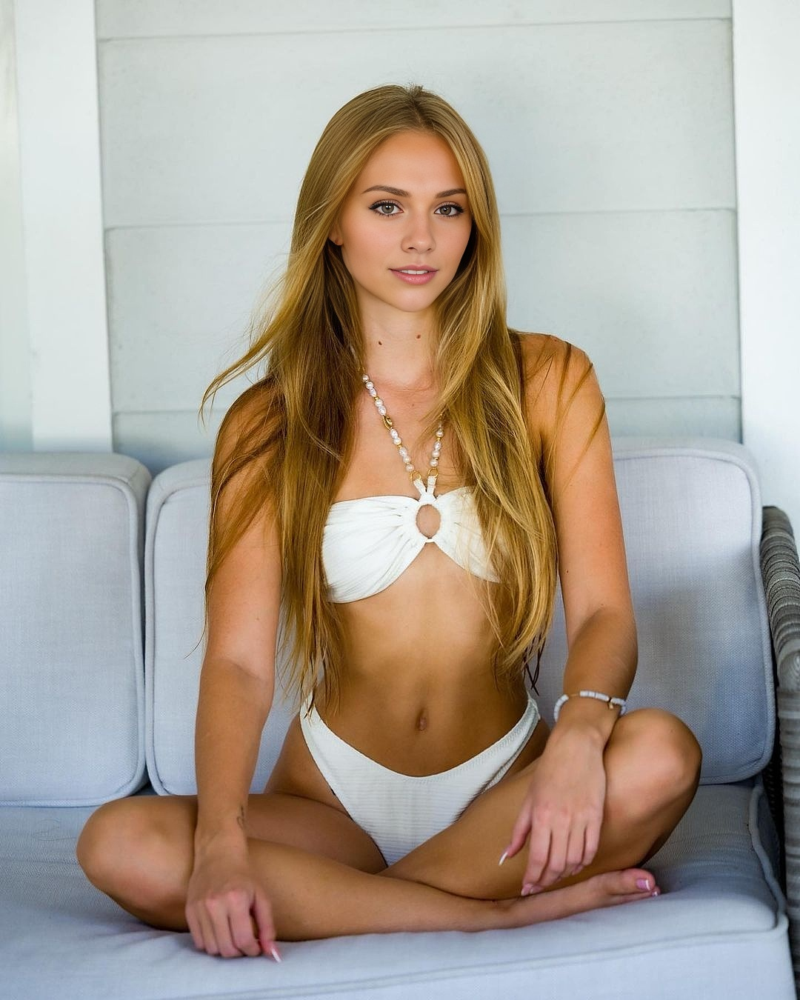
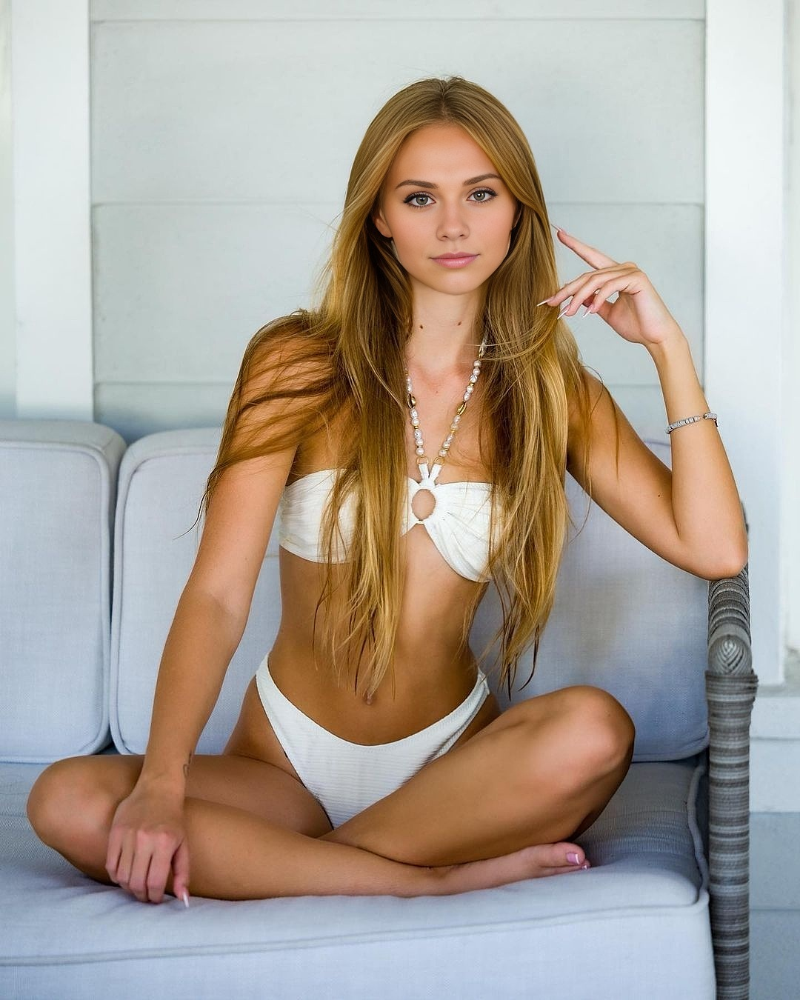

Bienvenue dans mon univers ✨
Je suis Romane Lexy, mannequin de 21 ans. Mon site est un espace pour partager mon quotidien, mes looks, et mes shootings. Suivez-moi à travers mes aventures dans la mode et mes projets !
Mon Histoire
Depuis l’âge de 18 ans, le mannequinat est ma passion. Chaque projet est une occasion de me dépasser, d’explorer de nouveaux univers et de collaborer avec des créateurs talentueux. Bien que je ne sois pas une grande voyageuse, j'ai la chance de voyager pour certains shootings et de découvrir des lieux inspirants grâce à mon métier.
Mon Style
Mon style est influencé par mes expériences professionnelles et mes shootings. J'aime mixer des looks élégants avec des touches modernes et intemporelles, tout en restant fidèle à une allure naturelle et authentique.
 



Mes Sections
Explorez mes passions à travers ces sections :